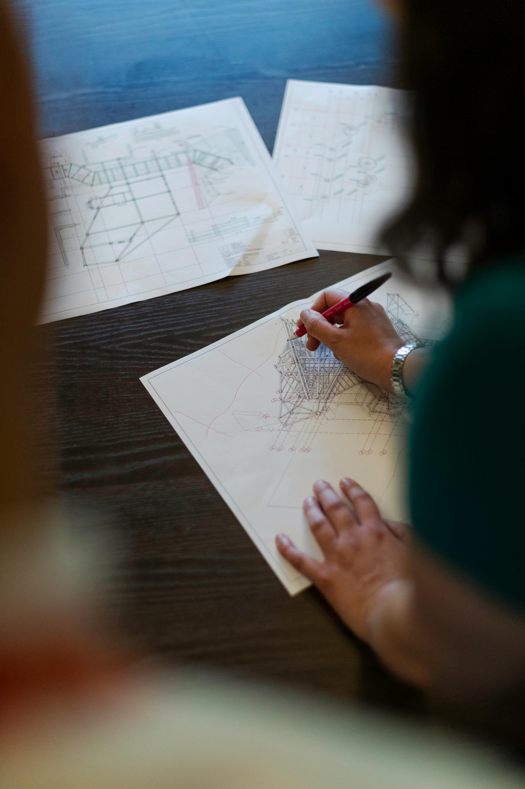

Mission
To provide and deliver high-quality projects within budget and on schedule, while building strong, long-term client relationships grounded in trust and clear communication.
We integrate electrical, architectural, construction and telecommunications disciplines to deliver infrastructure that supports connectivity, quality and long-term asset performance.
Delivery succeeds when field crews, designers and specialists stay aligned—from cell-site assessment and energizing facilities to commissioning telecom and architectural finishes.

The company reflects the synergy of its founders across electrical, architectural, construction and telecommunications. The Z framed by open and close parentheses represents a commitment to completing comprehensive work and closing out communities with cohesive, end-to-end solutions.
Our services span site works and technical surveys through advanced deployments in electrical, architectural, construction and telecommunications—executed with discipline, innovation and a clear focus on progress. We aim to pair architectural quality with reliable connectivity for resilient, modern environments.
To provide and deliver high-quality projects within budget and on schedule, while building strong, long-term client relationships grounded in trust and clear communication.
To be recognized in real estate, electrical, architectural, infrastructure and telecommunications for sound delivery, thoughtful design and ethical practice—nationally and in the markets we serve.
To be recognized as a standard-bearer for construction quality and a leading construction company nationwide.
These principles guide how we plan, coordinate and hand over work across every discipline we touch.
We combine diverse technical expertise—electrical, architectural, construction and telecommunications—into coherent programmes and single points of accountability.
We target consistent quality in delivery, documentation and interface with clients and partners, without compromising safety or compliance.
Requirements drive scope and sequencing; we tailor approach and reporting to the governance and milestones our clients operate under.
We maintain tight integration between disciplines so details in design translate correctly to fabrication, installation and commissioning.
With over three decades of collective experience in support facilities (CME) and telecommunications implementation, we tailor technical solutions to regulatory context, asset strategy and lifecycle expectations.
Our teams support telecommunications partners across active and passive implementation and maintenance—with the depth needed to adapt methods and standards to each site and rollout phase.
Long tenure across electrical work, telecom and civil delivery gives us a practical view of constraints, interfaces and risks before they surface on site.
We prioritise predictable outcomes: scope clarity, disciplined execution and alignment with your quality and acceptance criteria—with teams committed to measurable value throughout the engagement.